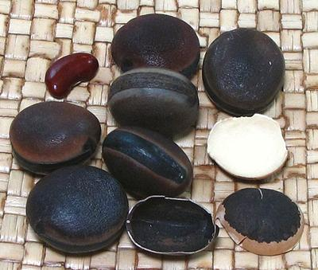

Horse Eye Bean

[Horse-eye Bean,
Hamburger Bean (English). Ojo de Venado (Mexico); Eye Yeux de Bourrique,
Grand Pois Pouilleux (French); Okobo (Nigeria); Mucuna sloanei]
This climbing shrub is native from Siera Leone in West Africa east to
D.R. Congo in central Africa, and as far south as Angola
. It is also
now found in the Caribbean, at the southern tip of Florida and in the
American tropics. It favors part shade with moist but well drained humus
rich soil.
This bean is usually gathered in the wild, but it is cultivated in
Nigeria, especially for young pods that are cooked like a vegetable.
Mature beans are ground to powder for use as a thickener in soups and
stews.
The photo specimens averaged 0.970 inch diameter and 0.660 inch thick
(2.46 x 1.67 cm) and weighed 0.15 ounce (4.35 gm).
More on Beans, Peas and Lentils.
Buying:
The whole beans are erratically available online,
in very small numbers at high prices. Most commonly they are drilled for
use as beads. Okobo powder can be found online at around 2021 US $4.99 for
4 ounces, plus shipping.
Health & Nutrition:
The seed pods and
sometimes leaves of this plant are covered in stinging hairs which cause
severe skin problems from contact. The hairs break off after piercing the
skin. Suggested treatment for removing the hairs is Duct Tape, and soap
and water. If hairs get into the eyes they can cause blindness, so immediate
medical attention is essential.
Watercolor copyright expired.
vi_horsez 211217 - www.clovegarden.com
©Andrew Grygus - agryg@clovegarden.com - Photos
on this page not otherwise credited © cg1
- Linking to and non-commercial use of this page permitted